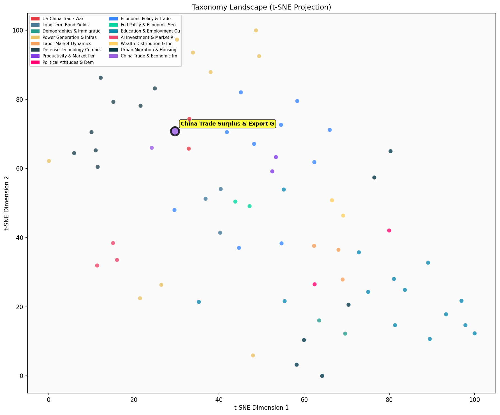

Description
This subcluster focuses on China's growing trade surpluses and export performance, particularly with major trading partners like the US and Europe. Articles analyze quantitative trade data including export growth rates, bilateral surplus figures, and comparative statistics on Chinese economic indicators versus other economies. Content draws from official trade statistics, economic surveys, and analytical reports examining China's evolving trade relationships. Coverage includes tariff responses from trading partners, shifts in import dependencies, and China's competitive positioning in global markets. The subcluster emphasizes empirical trade flow analysis and policy implications of China's export-driven growth model.
Similarity to All 70 Subclusters
Each cell represents a subcluster. Color intensity shows similarity (blue=low, red=high). Black line marks current subcluster position.
Relationship to Primary Clusters
Average similarity to each of the 15 primary clusters. Larger area = stronger relationship to that cluster.
Taxonomy Landscape
All 70 subclusters positioned by similarity (t-SNE). Current subcluster highlighted with label. Click to enlarge.
Network Connections
Current subcluster at center, connected to related subclusters. Line thickness = similarity strength.
Most Representative Articles
-
1. China's bilateral goods trade surplus with the US was $360B in 2024, 23% larger in $ terms than when
-
2. .@Brad_Setser notes that China’s exports of manufactured goods have grown over $150B/year over the p
-
3. Chinese mercantilism offers the US an opportunity, as trade partners may be more likely to “align th
-
4. China's post global crisis import income elasticity is < 1.
-
5. GS estimates that for every 1pp increase in Chinese GDP, advanced economies now experience a 0.1–0.3
Edge Cases (Boundary Articles)
-
1. American Airlines pilots approved a new contract boosting compensation by 46% over four years. The dThis article is borderline for the "China Trade Surplus & Export Growth" cluster because it focuses on domestic U.S. airline labor costs rather than international trade data or China's export performance. While the $9.6 billion cost figure might superficially relate to economic data analysis, the article's core content about American Airlines pilot compensation has no relevance to China's trade relationships or export growth metrics.
-
2. Since the 1980s industrial robot costs have fallen substantially while their precision has increasedThis article is borderline because while it discusses industrial robots (which could be relevant to China's manufacturing exports), it focuses specifically on the technological advancement and cost reduction of robots over time rather than China's actual trade performance, export data, or trade surplus metrics. The content is more aligned with productivity and innovation dynamics than with quantitative trade analysis.
-
3. 15% of American workers are independent contractors, according to a Gallup survey that was carefullyThis article is borderline because it focuses entirely on U.S. domestic employment patterns (independent contractors) rather than China's trade surpluses or export performance, which is the core topic of the assigned cluster. The article would be much better suited for the "Employment Patterns and Workforce Participation" cluster since it directly analyzes American workforce composition and employment survey methodology.
Original Dendrogram